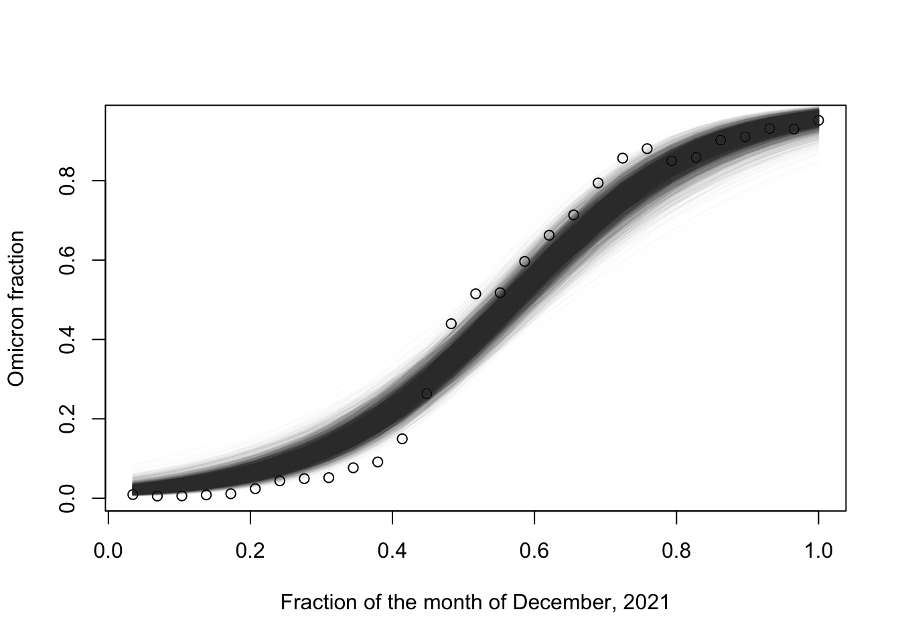

suppressPackageStartupMessages(require(rstan))
suppressPackageStartupMessages(require(ggplot2))
suppressPackageStartupMessages(require(dplyr))
# data from: https://data.chhs.ca.gov/dataset/covid-19-variant-data
df = read.csv("../../quizzes/q1/covid19_variants.csv")
df$date = as.Date(df$date,format="%Y-%m-%d")
df = df %>% filter(date > "2021-12-01" & date < "2021-12-31") %>% filter(variant_name == "Omicron")
df %>% ggplot(aes(x = date, y = percentage)) + geom_point() + ylim(0, 100) + theme_minimal()Stan: going further
Outline
Topics
- More complex types in Stan (vectors, constraints)
- Loops and vectorization
- Feeding complex data into Stan
Rationale
We review here the constructs needed to write more complex models such as Q2 in the current exercise, more similar exercises coming in the next weeks, and the second quiz.
Example
We revisit the omicron modelling question from quiz 1.
The data consists, for each day in December 2021, of the percentage of sequenced COVID-19 samples that are of the Omicron variant.
Model (mathematical notation)
Recall one possible model we discussed after the quiz (with slightly different prior hyper-parameters): for \(i \in \{1, 2, \dots, N\}\), \(N\) being the number of days in December (\(N=31\)),1
\[\begin{align*} \theta_0 &\sim {\mathrm{Exp}}(1) \\ \theta_1 &\sim \mathcal{N}(0, \sigma = 1000) \\ \theta_2 &\sim \mathcal{N}(0, \sigma = 1000) \\ \mu_i &= \text{logistic}(\theta_1 (i/N) + \theta_2) \\ y_i &\sim {\mathrm{Beta}}(\mu_i, \theta_0) \\ \end{align*}\]
Model (in Stan)
Let us translate the mathematical notation into Stan:
// comments in Stan use '//' not '#'
data {
// Here `N` is the number of days considered.
int N;
// meaning: `y` is a vector of length `N` where each entry is between zero and one.
vector<lower=0, upper=1>[N] y;
}
// As before, we declare in `parameters` the types of the unobserved (latent) random variables.
parameters {
real<lower=0> concentration;
real slope;
real intercept;
}
model {
concentration ~ exponential(1);
slope ~ normal(0, 1000);
intercept ~ normal(0, 1000);
for (i in 1:N) { // Stan is 1-indexed
// inv_logit is Stan's name for the logistic function
1 y[i] ~ beta_proportion(
inv_logit(intercept + slope * (i/N)),
concentration);
}
}- 1
-
Here,
beta_proportioncorresponds to the mean-concentration parameterization we discussed in the lecture on hierarchical models.
Improving our model with generated parameters
- The code in the last section will not print out \(\mu_i\)
- The code below shows how to fix this
- \(\mu_i\) is handled differently than \(\theta_k\), \(y_i\)…
- … because \(\mu_i\) is defined with \(=\) instead of \(\sim\)
data {
int N;
vector<lower=0, upper=1>[N] y;
}
parameters {
real<lower=0> concentration;
real slope;
real intercept;
}
1transformed parameters {
// linspaced_vector(N,0,1) creates a vector
// of N equispace points between 0 and 1
// (we normalize the dates to be between zero and one)
// functions in Stan are typically vectorized,
// this is the case for example with inv_logit
vector[N] mu =
inv_logit(intercept + slope*linspaced_vector(N,0,1));
}
2model {
concentration ~ exponential(1);
slope ~ normal(0, 1000);
intercept ~ normal(0, 1000);
// Another example of vectorization---the line below will produce the same
// output as the loop in the previous version, but slightly faster:
y ~ beta_proportion(mu, concentration);
}- 1
-
Whenever in the mathematical notation a latent random variable is defined using an equality (“\(=\)”), input it in the
transformed parametersblock. - 2
-
Whenever in the mathematical notation a latent random variable is defined using a distribution statement (“\(\sim\)”), input it in the
modelblock.
Running MCMC
Running MCMC on the model is done as before:2
data_without_zeros = pmax(pmin(df$percentage/100,0.999),0.001)
fit = sampling(
omicron,
1 data = list(
y = data_without_zeros,
N = length(data_without_zeros)
),
2 chains = 1,
iter = 10000
)- 1
-
Each variable in Stan’s
datablock needs to be fed a value when called from R. - 2
-
The
chainsoptions can be used to simulate several independent MCMC chains, more precisely, this is available after calling the functionoptions(mc.cores = parallel::detectCores()).
SAMPLING FOR MODEL 'anon_model' NOW (CHAIN 1).
Chain 1:
Chain 1: Gradient evaluation took 3.2e-05 seconds
Chain 1: 1000 transitions using 10 leapfrog steps per transition would take 0.32 seconds.
Chain 1: Adjust your expectations accordingly!
Chain 1:
Chain 1:
Chain 1: Iteration: 1 / 10000 [ 0%] (Warmup)
Chain 1: Iteration: 1000 / 10000 [ 10%] (Warmup)
Chain 1: Iteration: 2000 / 10000 [ 20%] (Warmup)
Chain 1: Iteration: 3000 / 10000 [ 30%] (Warmup)
Chain 1: Iteration: 4000 / 10000 [ 40%] (Warmup)
Chain 1: Iteration: 5000 / 10000 [ 50%] (Warmup)
Chain 1: Iteration: 5001 / 10000 [ 50%] (Sampling)
Chain 1: Iteration: 6000 / 10000 [ 60%] (Sampling)
Chain 1: Iteration: 7000 / 10000 [ 70%] (Sampling)
Chain 1: Iteration: 8000 / 10000 [ 80%] (Sampling)
Chain 1: Iteration: 9000 / 10000 [ 90%] (Sampling)
Chain 1: Iteration: 10000 / 10000 [100%] (Sampling)
Chain 1:
Chain 1: Elapsed Time: 0.161 seconds (Warm-up)
Chain 1: 0.197 seconds (Sampling)
Chain 1: 0.358 seconds (Total)
Chain 1: Posterior visualization
We can extract samples as follows:
samples = extract(fit)$mu
data = df$percentage
n_samples = nrow(samples)and plot the posterior distribution over the beta’s mean functions:
xs = 1:length(data) / length(data)
plot(xs, data/100,
xlab = "Fraction of the month of December, 2021",
ylab = "Omicron fraction")
for (i in 1:n_samples) {
lines(xs, samples[i,], col = rgb(red = 0, green = 0, blue = 0, alpha = 0.01))
}
Model criticism
What are potential weakness(es) of the model?
Click for answer
Many answers possible. For example, the systematic errors in the residuals (i.e., many points in a row are smaller at the beginning, and the reversed trend at the end) suggest that the logistic function is not quite rich enough to capture the details of the observed curve.
Footnotes
In the model below, notice we normalize the day by \(N\) to put it in the interval \([0, 1]\). This is not strictly necessary, but often, bringing covariates in a nice range can make sampling faster when it improves the condition number of the sampling problem.↩︎
note we make sure no datapoints have value zero or one as under certain parameter values of the beta distribution, this can lead to a zero density point which Stan is not able to handle.↩︎